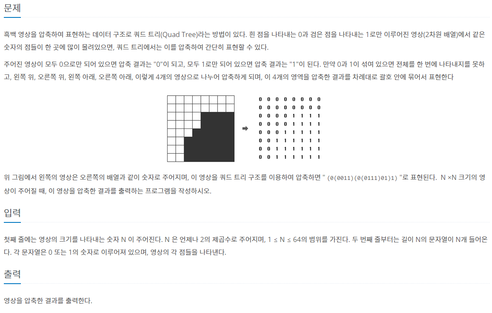
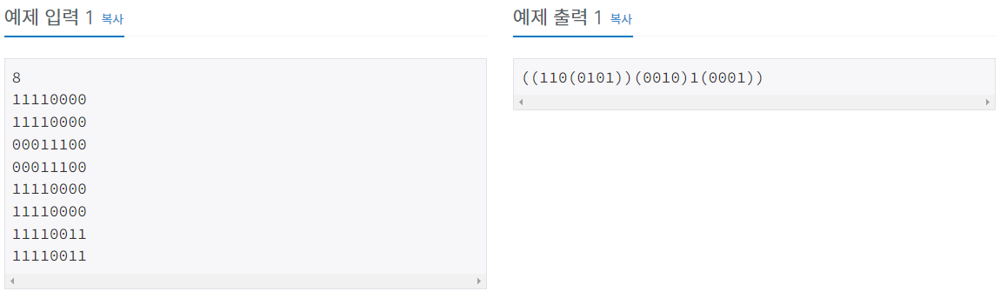
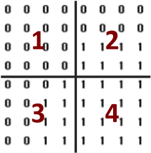

#INFO
난이도 : SILVER1
알고리즘 : 재귀
출처 : 1992번: 쿼드트리 (acmicpc.net)
1992번: 쿼드트리
첫째 줄에는 영상의 크기를 나타내는 숫자 N 이 주어진다. N 은 언제나 2의 제곱수로 주어지며, 1 ≤ N ≤ 64의 범위를 가진다. 두 번째 줄부터는 길이 N의 문자열이 N개 들어온다. 각 문자열은 0 또
www.acmicpc.net
 
#SOLVE
recur 함수 정의 _ 쿼드 트리의 크기 n, 탐색을 실행할 좌표 y, x를 인자로 입력받는다.
base condition _ n==1일때 해당 좌표의 숫자(0 혹은 1)를 출력하도록 설정한다.
//base condition
if(n==1){
cout << quadTree[y][x];
return;
}
크기 n만큼 탐색을 시작한다. 이 때 zero, one 변수를 이용해 쿼드트리가 모두 같은 수로 되어 있는지 체크한다.
bool zero = true;
bool one = true;
for(int i = y; i < y + n; i++)
for(int j = x; j < x + n; j++)
if(quadTree[i][j])
zero = false;
else
one = false;
if(zero)
cout << 0;
else if(one)
cout << 1;
만약 0과 1이 섞여있어 전체를 한 번에 나타내지 못하는 경우 4가지 구역으로 나누어 함수를 재귀적으로 호출한다.
else {
cout << "(";
recur(n / 2, y, x); // 왼쪽 위
recur(n / 2, y, x + n / 2); // 오른쪽 위
recur(n / 2, y + n / 2, x); // 왼쪽 아래
recur(n / 2, y + n / 2, x + n / 2); // 오른쪽 아래
cout << ")";
}
#CODE
#include <bits/stdc++.h>
using namespace std;
int quadTree[65][65];
int n;
void recur(int n, int y, int x){
//base condition
if(n==1){
cout << quadTree[y][x];
return;
}
bool zero = true;
bool one = true;
for(int i = y; i < y + n; i++)
for(int j = x; j < x + n; j++)
if(quadTree[i][j])
zero = false;
else
one = false;
if(zero)
cout << 0;
else if(one)
cout << 1;
else {
cout << "(";
recur(n / 2, y, x); // 왼쪽 위
recur(n / 2, y, x + n / 2); // 오른쪽 위
recur(n / 2, y + n / 2, x); // 왼쪽 아래
recur(n / 2, y + n / 2, x + n / 2); // 오른쪽 아래
cout << ")";
}
}
int main() {
ios::sync_with_stdio(0);
cin.tie(0);
cin >> n;
for(int i = 0; i < n; i++){
string str;
cin >> str;
for(int j = 0; j < n; j++)
quadTree[i][j] = str[j] - '0';
}
recur(n, 0, 0);
return 0;
}